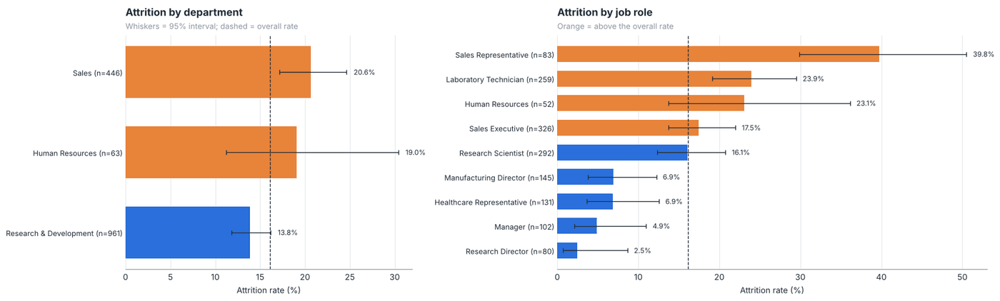
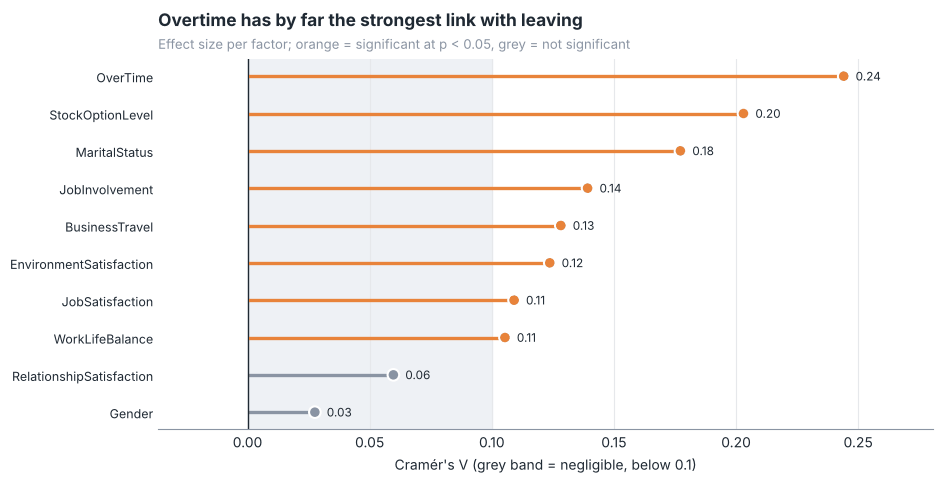
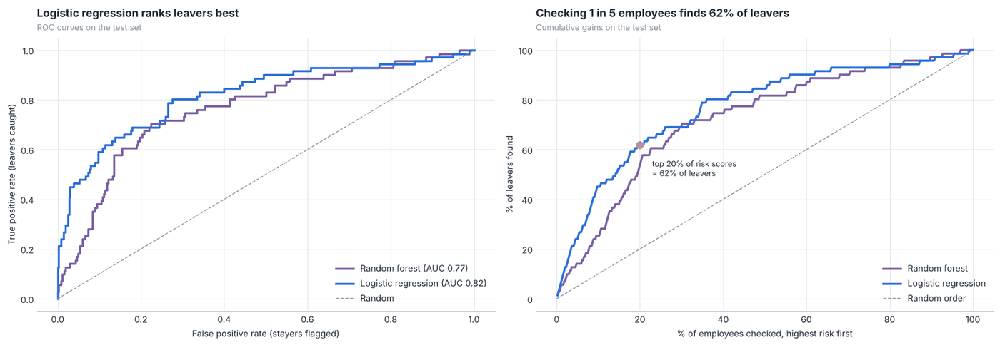
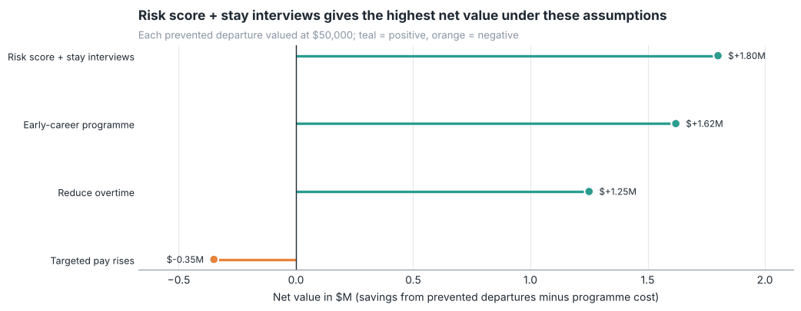

Employee attrition: who leaves, and what would keep them
From raw HR data to a retention strategy: segmentation, statistical tests with effect sizes, a predictive model and a business case with explicit assumptions.
- Data
- IBM HR Analytics Attrition dataset, 1,470 employees
- Tools
- pandas, SciPy, scikit-learn, matplotlib
- Type
- Personal project, Kaggle notebook
The question
Who leaves, why, how well can it be predicted, and which retention measures would be worth their cost?
The data
IBM's HR Analytics dataset: 1,470 employees and 35 columns, with no missing values or duplicates. It's fictional, created by IBM data scientists for teaching, and a single snapshot: it shows who left, not when. 237 employees (16.1%) left.
Where attrition is concentrated
Risk is far from evenly spread. Sales Representatives leave at 39.8%, employees in their first two years at 29.8%, under-25s at 35.8% and the lowest income band at 28.6%. Senior roles are the most stable: Research Directors 2.5%, Managers 4.9%.

Which factors matter most
I tested every factor the same way and ranked them by effect size (Cramér's V) rather than p-value, because with 1,470 people even tiny differences are "significant". Overtime is the strongest single factor: 30.5% attrition with overtime against 10.4% without, 2.9 times higher. Leavers also earn less, with a median monthly income of $3,202 against $5,204.

Predicting who is at risk
Only 16% of employees left, so predicting "everyone stays" is already 84% accurate and useless. I compared models on AUC instead: logistic regression reaches 0.82 on the test set, beating a random forest (0.77). Flagging the top 20% of risk scores finds 62% of leavers. At the chosen threshold, 53% of flagged employees actually leave, against 16% if picked at random.

The business case
At an assumed $50,000 per leaver, I compared four retention measures. A risk score with stay interviews (+$1.80M) and an early-career programme (+$1.62M) give the highest net value. Targeted pay rises don't pay back on replacement cost alone, though they may still be right for fairness reasons.

What to keep in mind
- The data is fictional and has no dates, so rates are shares of one workforce, not annual turnover.
- Overtime, pay and satisfaction go with leaving; this data can't prove that changing them keeps people.
- A risk score should never drive decisions about individuals without human review.
Next, I'd collect exit dates to model time to leaving, and test retention measures as a pilot with a comparison group.